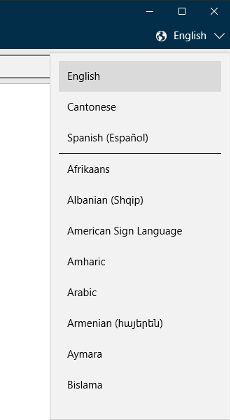
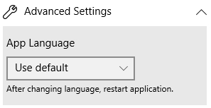
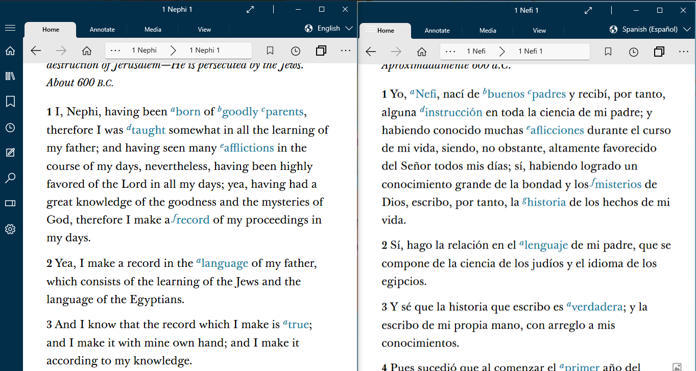

How Do I Use Gospel Library in Other Languages - Silent Video
How Do I Use Gospel Library in Other Languages - Silent Video How Do I Use Gospel Library in Other Languages - Silent Video
Gospel Library for Windows has both a content language and an app language.
The content language is the language you see content in, like the Book of Mormon or the Gospel Principles manual. For example, if your content language is Swedish, all of the content in the Library pane and in the Library section of the home screen will be in Swedish. This is different from the app language—or the language the application uses to communicate with you.
If your app language is French, all of the text for different parts of the app, like buttons, settings, and error messages, will be in French.
Changing the content language to your second language allows you to study gospel content in that language without the worry that you won't recognize technical words while using the application.
You can switch languages for Gospel Library content by selecting the current language in the top-right corner and choosing the new content language. Recently-used languages will appear at the top of the list. When you change content languages with a book open, the app will try to switch to the same place in the book in the new language.
You can change the app language by opening the Settings pane, pressing "Advanced Settings", and then selecting the app language of your choice. By default, Gospel Library will try to open the app using the language your computer is set to. If it isn't able to, it defaults to English.
After you change the app language in the settings pane, you will need to close and reopen the application so that it can load in the language you have selected.
It is often helpful to show two languages simultenously to help in learning a language and in comparing the languages.
One way to do this is to bring up the program twice creating two separate windows. In the first window select the first language and navigate to the desired passage. In the second window select the second language and navigate to the desired passage. The windows can be displayed side by side or on separate screens. The following image shows two languages displayed side by side on the same screen.
